Varianta A – cu figurile din MDF
Maria, Iosif și ieslea cu Pruncul se taie din MDF și se prind de peretele interior.
100 piese17 fâșii CNC22.4 m² MDFrest întreg 832 × 2070 mm
DXF de tăiat, câte unul pe fâșie:
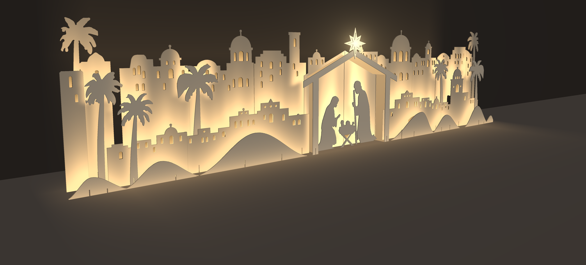
Decor de Crăciun pe layere: orașul Betleem și ieslea cu Sfânta Familie, din MDF 10 mm tăiat pe CNC. Are 8290 mm lățime (fără brazi), max. 1940 mm înălțime și ≈ 61 cm adâncime. Stă singur, cu saci de nisip; nu se găurește scena.
Descarcă tot (ZIP) Vezi în 3D Alege varianta A sau BDecorul e același în ambele variante; diferă doar figurile din iesle și, de aceea, așezarea pe plăci. Ia un singur set de fișiere, pe cel al variantei tale. Fișierele DXF sunt în mm (R2010). Layere: 1_GAURI_D* găuri · 2_DECUPAJ_INTERIOR ferestre (se taie primele) · 3_CONTUR_EXTERIOR contur · 4_ETICHETE și 0_FORMAT_PLACA nu se taie. Fante de 10,4 mm pentru MDF de 10 mm: fă întâi o probă.
Maria, Iosif și ieslea cu Pruncul se taie din MDF și se prind de peretele interior.
DXF de tăiat, câte unul pe fâșie:
Iosif, Maria și Pruncul îi ai deja: nu se taie. Le pui sub acoperișul ieslei.
DXF de tăiat, câte unul pe fâșie:
Rama, tavanul ieslei și peretele de sus cu casele de peste acoperiș (P-SUS) stau singure, prinse în nervurile N-09 și N-10 de sub stâlpi. Peretele interior P-INT și pereții laterali IR-S, IR-D sunt doar înșurubați. Când îi scoți (împreună cu figurile MDF, în varianta A), sub acoperiș rămâne un spațiu liber de ≈ 1,46 m lățime, ≈ 1,10 m înălțime la stâlpi (≈ 1,46 m la mijloc), deschis spre spate.
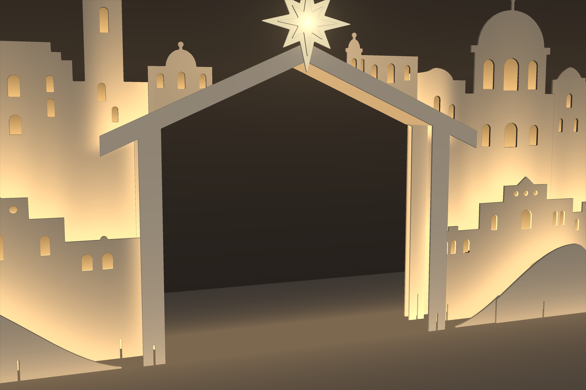
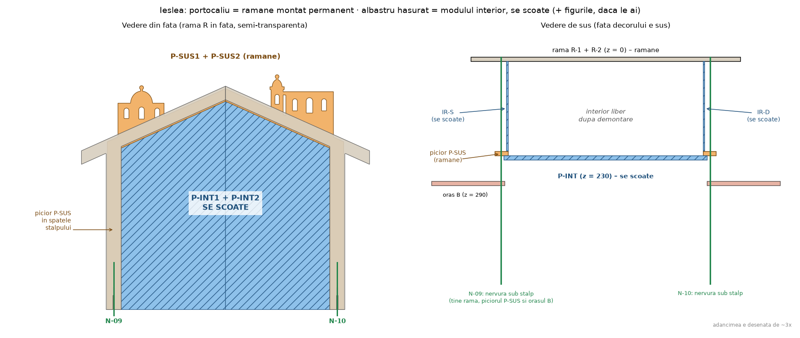
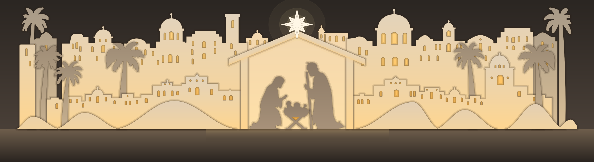
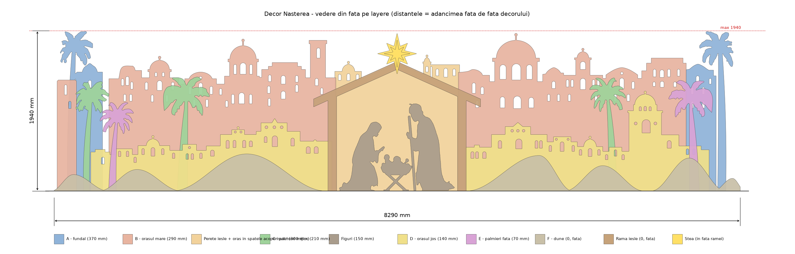
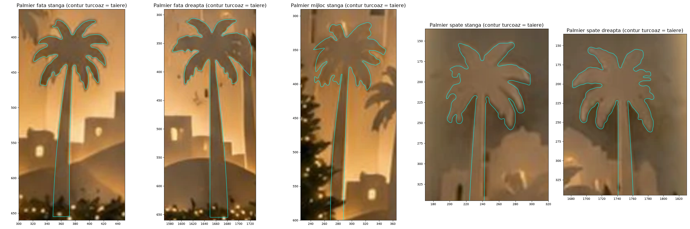
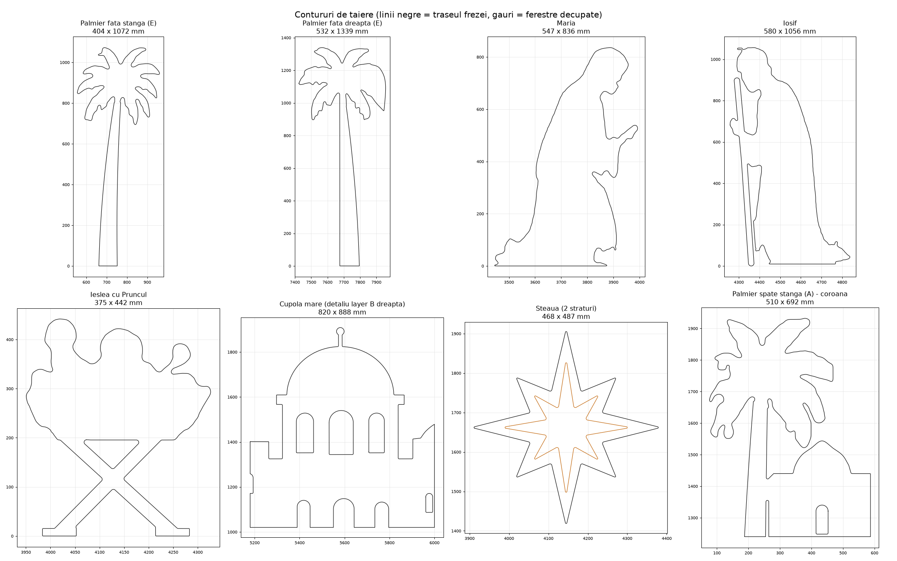
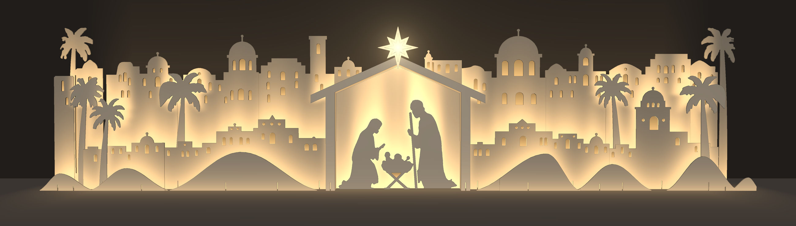
Fiecare placă de 2800 × 2070 se taie întâi pe circular în fâșii de 2070 mm lungime. Fâșiile au lățimi diferite, fiecare cât să cuprindă exact piesele din ea (maximum 1245 mm, cât intră pe CNC). Pânza e socotită de 4 mm. Apoi fiecare fâșie se taie pe CNC din fișierul ei DXF. Ce rămâne la capăt e un rest întreg, pentru piese de rezervă. Același conținut e și în PDF-ul „Plăci și piese” al fiecărei variante.
Toate tăieturile sunt paralele cu latura de 2070 mm. Măsori fâșiile una după alta, de fiecare dată de la marginea nouă: 1241 mm → P1-B1, 1237 mm → P1-B2, 312 mm → P1-B3. Placa se folosește toată.
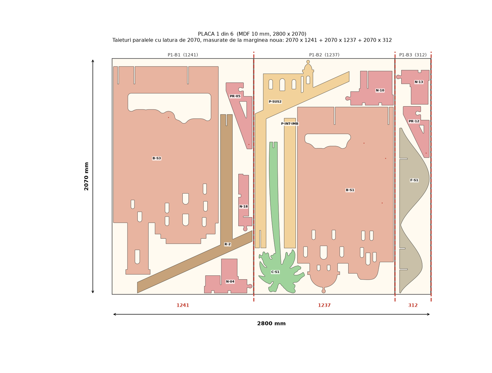
| Fâșie | Dimensiuni / cod | Denumire | Dim. piesă (mm) | DXF |
|---|---|---|---|---|
| P1-B1 P1-B1.dxf | 2070 × 1241 | 5 piese · vezi așezarea | ||
| B-S3 | Oras mare stanga 3 (clopotnita) | 1824 × 923 | DXF | |
| N-04 | Nervura x=1180 | 420 × 300 | DXF | |
| N-18 | Nervura x=7930 | 500 × 120 | DXF | |
| PR-05 | Proptea pentru N-05 | 582 × 230 | DXF | |
| R-2 | Rama iesle - dreapta | 1567 × 1008 | DXF | |
| P1-B2 P1-B2.dxf | 2070 × 1237 | 5 piese · vezi așezarea | ||
| B-S1 | Oras mare stanga 1 (cupola mica) | 1632 × 843 | DXF | |
| C-S1 | Palmier mijloc stanga (capat) | 1325 × 404 | DXF | |
| N-10 | Nervura x=4928 | 420 × 300 | DXF | |
| P-INT-IMB | Placa imbinare perete interior | 1139 × 100 | DXF | |
| P-SUS2 | Perete iesle sus - dreapta (permanent) | 1647 × 827 | DXF | |
| P1-B3 P1-B3.dxf | 2070 × 312 | 3 piese · vezi așezarea | ||
| F-S1 | Dune stanga 1 | 1448 × 261 | DXF | |
| N-13 | Nervura x=6200 | 300 × 290 | DXF | |
| PR-12 | Proptea pentru N-12 | 450 × 230 | DXF | |
Toate tăieturile sunt paralele cu latura de 2070 mm. Măsori fâșiile una după alta, de fiecare dată de la marginea nouă: 1216 mm → P2-B1, 1181 mm → P2-B2, 391 mm → P2-B3. Placa se folosește toată.
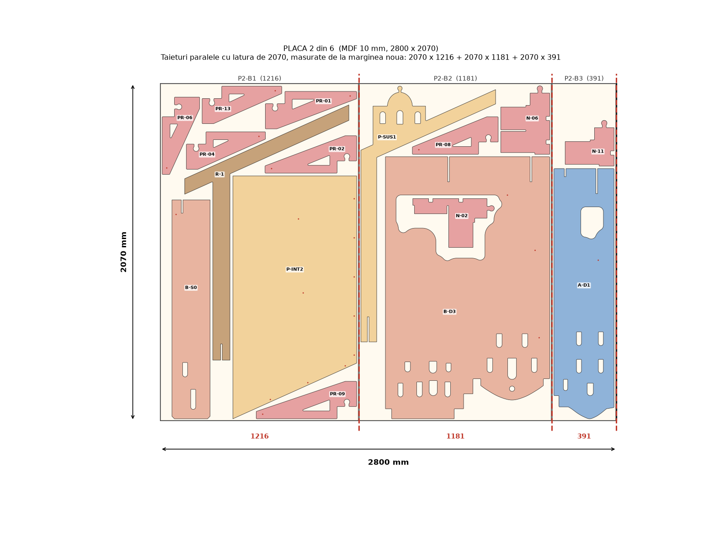
| Fâșie | Dimensiuni / cod | Denumire | Dim. piesă (mm) | DXF |
|---|---|---|---|---|
| P2-B1 P2-B1.dxf | 2070 × 1216 | 9 piese · vezi așezarea | ||
| B-S0 | Oras mare stanga: cladirea de la capat | 1344 × 234 | DXF | |
| P-INT2 | Perete interior iesle - dreapta (demontabil) | 1491 × 760 | DXF | |
| PR-01 | Proptea pentru N-01 | 561 × 230 | DXF | |
| PR-02 | Proptea pentru N-02 | 562 × 230 | DXF | |
| PR-04 | Proptea pentru N-04 | 486 × 230 | DXF | |
| PR-06 | Proptea pentru N-06 | 475 × 230 | DXF | |
| PR-09 | Proptea pentru N-09 | 617 × 230 | DXF | |
| PR-13 | Proptea pentru N-13 | 489 × 230 | DXF | |
| R-1 | Rama iesle - stanga | 1567 × 1008 | DXF | |
| P2-B2 P2-B2.dxf | 2070 × 1181 | 5 piese · vezi așezarea | ||
| B-D3 | Oras mare dreapta 3 | 1609 × 1008 | DXF | |
| N-02 | Nervura x=393 | 500 × 300 | DXF | |
| N-06 | Nervura x=2150 | 420 × 300 | DXF | |
| P-SUS1 | Perete iesle sus - stanga (permanent) | 1571 × 827 | DXF | |
| PR-08 | Proptea pentru N-08 | 527 × 230 | DXF | |
| P2-B3 P2-B3.dxf | 2070 × 391 | 2 piese · vezi așezarea | ||
| A-D1 | Fundal dreapta: cladire spate | 1536 × 369 | DXF | |
| N-11 | Nervura x=5080 | 300 × 280 | DXF | |
Toate tăieturile sunt paralele cu latura de 2070 mm. Măsori fâșiile una după alta, de fiecare dată de la marginea nouă: 1057 mm → P3-B1, 1048 mm → P3-B2, 678 mm → P3-B3. Rămâne o fâșie de deșeu de 5 mm.
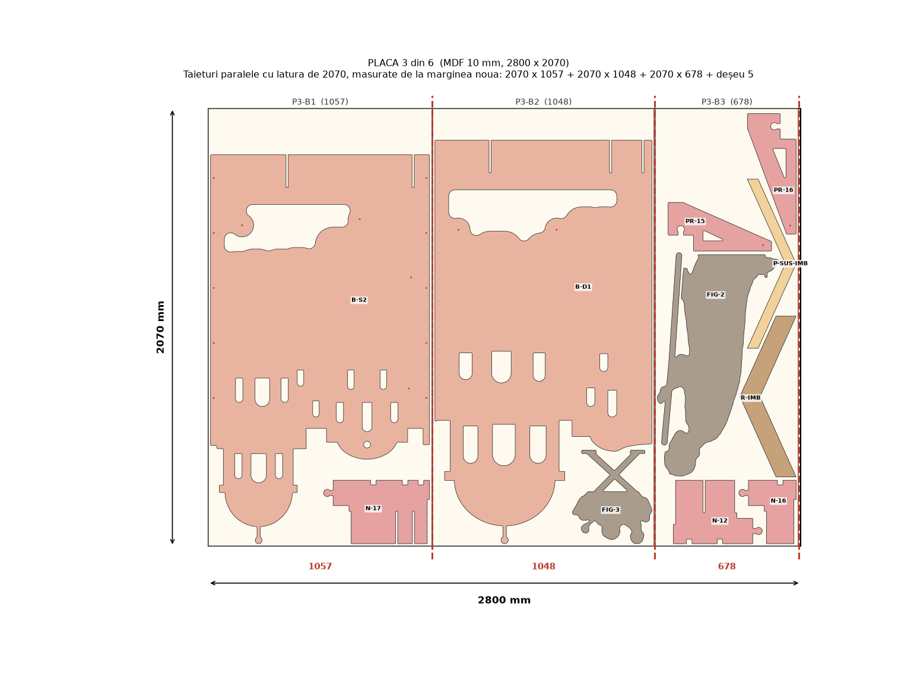
| Fâșie | Dimensiuni / cod | Denumire | Dim. piesă (mm) | DXF |
|---|---|---|---|---|
| P3-B1 P3-B1.dxf | 2070 × 1057 | 2 piese · vezi așezarea | ||
| B-S2 | Oras mare stanga 2 (cupola) | 1839 × 1035 | DXF | |
| N-17 | Nervura x=7736 | 500 × 300 | DXF | |
| P3-B2 P3-B2.dxf | 2070 × 1048 | 2 piese · vezi așezarea | ||
| B-D1 | Oras mare dreapta 1 (cupola mare) | 1908 × 1026 | DXF | |
| FIG-3 | Ieslea cu Pruncul | 442 × 375 | DXF | |
| P3-B3 P3-B3.dxf | 2070 × 678 | 7 piese · vezi așezarea | ||
| FIG-2 | Iosif | 1056 × 580 | DXF | |
| N-12 | Nervura x=5650 | 420 × 300 | DXF | |
| N-16 | Nervura x=7250 | 300 × 270 | DXF | |
| P-SUS-IMB | Placa imbinare perete sus | 800 × 231 | DXF | |
| PR-15 | Proptea pentru N-15 | 489 × 230 | DXF | |
| PR-16 | Proptea pentru N-16 | 570 × 230 | DXF | |
| R-IMB | Placa imbinare coama rama | 760 × 266 | DXF | |
Toate tăieturile sunt paralele cu latura de 2070 mm. Măsori fâșiile una după alta, de fiecare dată de la marginea nouă: 1244 mm → P4-B1, 1240 mm → P4-B2, 262 mm → P4-B3. Rămâne o fâșie de deșeu de 42 mm.
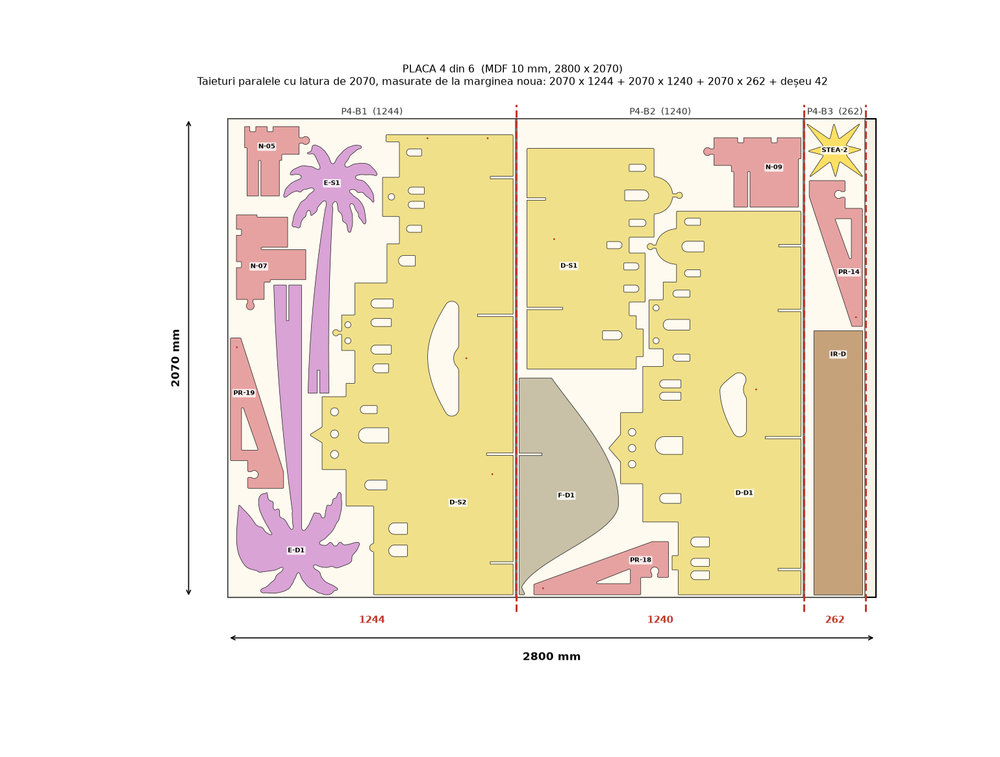
| Fâșie | Dimensiuni / cod | Denumire | Dim. piesă (mm) | DXF |
|---|---|---|---|---|
| P4-B1 P4-B1.dxf | 2070 × 1244 | 6 piese · vezi așezarea | ||
| D-S2 | Oras jos stanga 2 | 1989 × 876 | DXF | |
| E-D1 | Palmier fata dreapta | 1339 × 532 | DXF | |
| E-S1 | Palmier fata stanga | 1072 × 404 | DXF | |
| N-05 | Nervura x=1554 | 300 × 280 | DXF | |
| N-07 | Nervura x=2750 | 410 × 300 | DXF | |
| PR-19 | Proptea pentru N-19 | 650 × 230 | DXF | |
| P4-B2 P4-B2.dxf | 2070 × 1240 | 5 piese · vezi așezarea | ||
| D-D1 | Oras jos dreapta 1 | 1658 × 829 | DXF | |
| D-S1 | Oras jos stanga 1 | 954 × 672 | DXF | |
| F-D1 | Dune dreapta 1 | 937 × 430 | DXF | |
| N-09 | Nervura x=3362 | 420 × 300 | DXF | |
| PR-18 | Proptea pentru N-18 | 582 × 230 | DXF | |
| P4-B3 P4-B3.dxf | 2070 × 262 | 3 piese · vezi așezarea | ||
| IR-D | Perete lateral iesle (dreapta) | 1144 × 210 | DXF | |
| PR-14 | Proptea pentru N-14 | 631 × 230 | DXF | |
| STEA-2 | Steaua - fata | 328 × 310 | DXF | |
Toate tăieturile sunt paralele cu latura de 2070 mm. Măsori fâșiile una după alta, de fiecare dată de la marginea nouă: 1231 mm → P5-B1, 1224 mm → P5-B2, 252 mm → P5-B3. Rămâne o fâșie de deșeu de 81 mm.
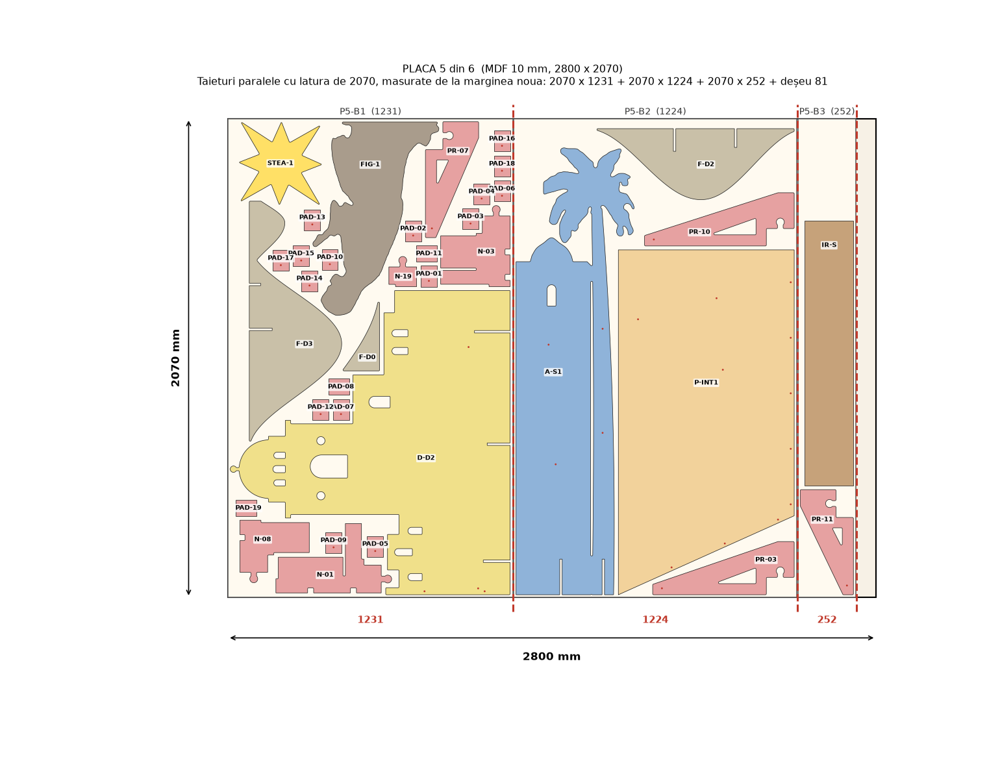
| Fâșie | Dimensiuni / cod | Denumire | Dim. piesă (mm) | DXF |
|---|---|---|---|---|
| P5-B1 P5-B1.dxf | 2070 × 1231 | 29 piese · vezi așezarea | ||
| D-D2 | Oras jos dreapta 2 (turn cu cupola) | 1315 × 1210 | DXF | |
| F-D0 | Dune dreapta 0 (capat) | 297 × 158 | DXF | |
| F-D3 | Dune dreapta 3 | 1038 × 399 | DXF | |
| FIG-1 | Maria | 836 × 544 | DXF | |
| N-01 | Nervura x=210 | 500 × 300 | DXF | |
| N-03 | Nervura x=707 | 350 × 300 | DXF | |
| N-08 | Nervura x=3220 | 300 × 270 | DXF | |
| N-19 | Nervura x=8066 | 130 × 120 | DXF | |
| PAD-01 | Placuta coltar pt PR-01 (pe A-S1) | 90 × 70 | DXF | |
| PAD-02 | Placuta coltar pt PR-02 (pe A-S1) | 90 × 70 | DXF | |
| PAD-03 | Placuta coltar pt PR-03 (pe B-S1) | 90 × 70 | DXF | |
| PAD-04 | Placuta coltar pt PR-04 (pe B-S1) | 90 × 70 | DXF | |
| PAD-05 | Placuta coltar pt PR-05 (pe B-S2) | 90 × 70 | DXF | |
| PAD-06 | Placuta coltar pt PR-06 (pe B-S2) | 90 × 70 | DXF | |
| PAD-07 | Placuta coltar pt PR-07 (pe B-S3) | 90 × 70 | DXF | |
| PAD-08 | Placuta coltar pt PR-08 (pe B-S3) | 90 × 70 | DXF | |
| PAD-09 | Placuta coltar pt PR-09 (pe B-S3) | 90 × 70 | DXF | |
| PAD-10 | Placuta coltar pt PR-10 (pe B-D1) | 90 × 70 | DXF | |
| PAD-11 | Placuta coltar pt PR-11 (pe B-D1) | 90 × 70 | DXF | |
| PAD-12 | Placuta coltar pt PR-12 (pe B-D1) | 90 × 70 | DXF | |
| PAD-13 | Placuta coltar pt PR-13 (pe B-D2) | 90 × 70 | DXF | |
| PAD-14 | Placuta coltar pt PR-14 (pe B-D2) | 90 × 70 | DXF | |
| PAD-15 | Placuta coltar pt PR-15 (pe B-D3) | 90 × 70 | DXF | |
| PAD-16 | Placuta coltar pt PR-16 (pe B-D3) | 90 × 70 | DXF | |
| PAD-17 | Placuta coltar pt PR-17 (pe A-D1) | 90 × 70 | DXF | |
| PAD-18 | Placuta coltar pt PR-18 (pe A-D1) | 90 × 70 | DXF | |
| PAD-19 | Placuta coltar pt PR-19 (pe A-D2) | 90 × 70 | DXF | |
| PR-07 | Proptea pentru N-07 | 501 × 230 | DXF | |
| STEA-1 | Steaua - baza (spate) | 487 × 468 | DXF | |
| P5-B2 P5-B2.dxf | 2070 × 1224 | 5 piese · vezi așezarea | ||
| A-S1 | Fundal stanga: palmier + cladire spate | 1932 × 510 | DXF | |
| F-D2 | Dune dreapta 2 | 852 × 307 | DXF | |
| P-INT1 | Perete interior iesle - stanga (demontabil) | 1491 × 760 | DXF | |
| PR-03 | Proptea pentru N-03 | 612 × 230 | DXF | |
| PR-10 | Proptea pentru N-10 | 647 × 230 | DXF | |
| P5-B3 P5-B3.dxf | 2070 × 252 | 2 piese · vezi așezarea | ||
| IR-S | Perete lateral iesle (stanga) | 1144 × 210 | DXF | |
| PR-11 | Proptea pentru N-11 | 454 × 230 | DXF | |
Toate tăieturile sunt paralele cu latura de 2070 mm. Măsori fâșiile una după alta, de fiecare dată de la marginea nouă: 1160 mm → P6-B1, 800 mm → P6-B2. Ce rămâne (832 × 2070 mm) e un rest întreg: păstrează-l pentru piese de rezervă.
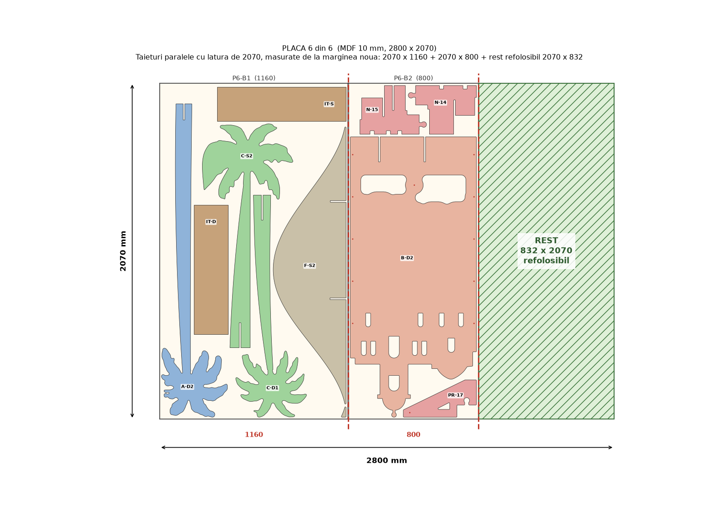
| Fâșie | Dimensiuni / cod | Denumire | Dim. piesă (mm) | DXF |
|---|---|---|---|---|
| P6-B1 P6-B1.dxf | 2070 × 1160 | 6 piese · vezi așezarea | ||
| A-D2 | Fundal dreapta: palmier spate | 1931 × 406 | DXF | |
| C-D1 | Palmier mijloc dreapta (nou) | 1369 × 436 | DXF | |
| C-S2 | Palmier mijloc stanga (nou) | 1380 × 558 | DXF | |
| F-S2 | Dune stanga 2 | 1789 × 449 | DXF | |
| IT-D | Tavan iesle (dreapta) | 796 × 210 | DXF | |
| IT-S | Tavan iesle (stanga) | 796 × 210 | DXF | |
| P6-B2 P6-B2.dxf | 2070 × 800 | 4 piese · vezi așezarea | ||
| B-D2 | Oras mare dreapta 2 (turn) | 1728 × 778 | DXF | |
| N-14 | Nervura x=6480 | 420 × 300 | DXF | |
| N-15 | Nervura x=6744 | 410 × 300 | DXF | |
| PR-17 | Proptea pentru N-17 | 451 × 230 | DXF | |
| P6-REST | 2070 × 832 | rest întreg, refolosibil – păstrează-l pentru piese de rezervă | ||
Toate tăieturile sunt paralele cu latura de 2070 mm. Măsori fâșiile una după alta, de fiecare dată de la marginea nouă: 1145 mm → P1-B1, 865 mm → P1-B2, 782 mm → P1-B3. Placa se folosește toată.
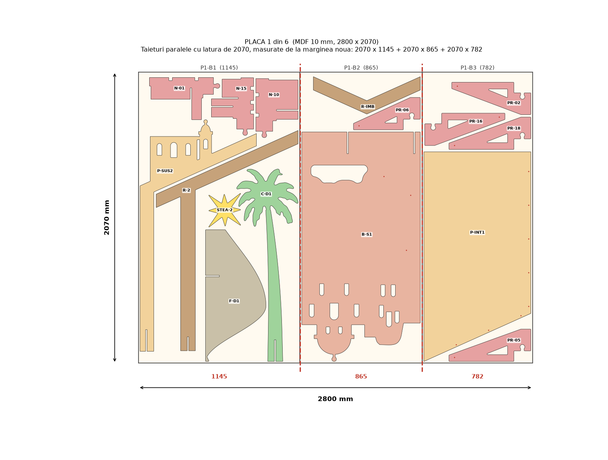
| Fâșie | Dimensiuni / cod | Denumire | Dim. piesă (mm) | DXF |
|---|---|---|---|---|
| P1-B1 P1-B1.dxf | 2070 × 1145 | 8 piese · vezi așezarea | ||
| C-D1 | Palmier mijloc dreapta (nou) | 1369 × 436 | DXF | |
| F-D1 | Dune dreapta 1 | 937 × 430 | DXF | |
| N-01 | Nervura x=210 | 500 × 300 | DXF | |
| N-10 | Nervura x=4928 | 420 × 300 | DXF | |
| N-15 | Nervura x=6744 | 410 × 300 | DXF | |
| P-SUS2 | Perete iesle sus - dreapta (permanent) | 1647 × 827 | DXF | |
| R-2 | Rama iesle - dreapta | 1567 × 1008 | DXF | |
| STEA-2 | Steaua - fata | 328 × 310 | DXF | |
| P1-B2 P1-B2.dxf | 2070 × 865 | 3 piese · vezi așezarea | ||
| B-S1 | Oras mare stanga 1 (cupola mica) | 1632 × 843 | DXF | |
| PR-06 | Proptea pentru N-06 | 475 × 230 | DXF | |
| R-IMB | Placa imbinare coama rama | 760 × 266 | DXF | |
| P1-B3 P1-B3.dxf | 2070 × 782 | 5 piese · vezi așezarea | ||
| P-INT1 | Perete interior iesle - stanga (demontabil) | 1491 × 760 | DXF | |
| PR-02 | Proptea pentru N-02 | 562 × 230 | DXF | |
| PR-05 | Proptea pentru N-05 | 582 × 230 | DXF | |
| PR-16 | Proptea pentru N-16 | 570 × 230 | DXF | |
| PR-18 | Proptea pentru N-18 | 582 × 230 | DXF | |
Toate tăieturile sunt paralele cu latura de 2070 mm. Măsori fâșiile una după alta, de fiecare dată de la marginea nouă: 1232 mm → P2-B1, 1168 mm → P2-B2, 391 mm → P2-B3. Placa se folosește toată.
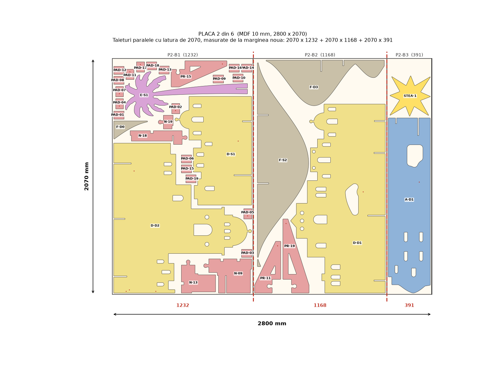
| Fâșie | Dimensiuni / cod | Denumire | Dim. piesă (mm) | DXF |
|---|---|---|---|---|
| P2-B1 P2-B1.dxf | 2070 × 1232 | 28 piese · vezi așezarea | ||
| D-D2 | Oras jos dreapta 2 (turn cu cupola) | 1315 × 1210 | DXF | |
| D-S1 | Oras jos stanga 1 | 954 × 672 | DXF | |
| E-S1 | Palmier fata stanga | 1072 × 404 | DXF | |
| F-D0 | Dune dreapta 0 (capat) | 297 × 158 | DXF | |
| N-09 | Nervura x=3362 | 420 × 300 | DXF | |
| N-13 | Nervura x=6200 | 300 × 290 | DXF | |
| N-18 | Nervura x=7930 | 500 × 120 | DXF | |
| N-19 | Nervura x=8066 | 130 × 120 | DXF | |
| PAD-01 | Placuta coltar pt PR-01 (pe A-S1) | 90 × 70 | DXF | |
| PAD-02 | Placuta coltar pt PR-02 (pe A-S1) | 90 × 70 | DXF | |
| PAD-03 | Placuta coltar pt PR-03 (pe B-S1) | 90 × 70 | DXF | |
| PAD-04 | Placuta coltar pt PR-04 (pe B-S1) | 90 × 70 | DXF | |
| PAD-05 | Placuta coltar pt PR-05 (pe B-S2) | 90 × 70 | DXF | |
| PAD-06 | Placuta coltar pt PR-06 (pe B-S2) | 90 × 70 | DXF | |
| PAD-07 | Placuta coltar pt PR-07 (pe B-S3) | 90 × 70 | DXF | |
| PAD-08 | Placuta coltar pt PR-08 (pe B-S3) | 90 × 70 | DXF | |
| PAD-09 | Placuta coltar pt PR-09 (pe B-S3) | 90 × 70 | DXF | |
| PAD-10 | Placuta coltar pt PR-10 (pe B-D1) | 90 × 70 | DXF | |
| PAD-11 | Placuta coltar pt PR-11 (pe B-D1) | 90 × 70 | DXF | |
| PAD-12 | Placuta coltar pt PR-12 (pe B-D1) | 90 × 70 | DXF | |
| PAD-13 | Placuta coltar pt PR-13 (pe B-D2) | 90 × 70 | DXF | |
| PAD-14 | Placuta coltar pt PR-14 (pe B-D2) | 90 × 70 | DXF | |
| PAD-15 | Placuta coltar pt PR-15 (pe B-D3) | 90 × 70 | DXF | |
| PAD-16 | Placuta coltar pt PR-16 (pe B-D3) | 90 × 70 | DXF | |
| PAD-17 | Placuta coltar pt PR-17 (pe A-D1) | 90 × 70 | DXF | |
| PAD-18 | Placuta coltar pt PR-18 (pe A-D1) | 90 × 70 | DXF | |
| PAD-19 | Placuta coltar pt PR-19 (pe A-D2) | 90 × 70 | DXF | |
| PR-15 | Proptea pentru N-15 | 489 × 230 | DXF | |
| P2-B2 P2-B2.dxf | 2070 × 1168 | 5 piese · vezi așezarea | ||
| D-D1 | Oras jos dreapta 1 | 1658 × 829 | DXF | |
| F-D3 | Dune dreapta 3 | 1038 × 399 | DXF | |
| F-S2 | Dune stanga 2 | 1789 × 449 | DXF | |
| PR-11 | Proptea pentru N-11 | 454 × 230 | DXF | |
| PR-19 | Proptea pentru N-19 | 650 × 230 | DXF | |
| P2-B3 P2-B3.dxf | 2070 × 391 | 2 piese · vezi așezarea | ||
| A-D1 | Fundal dreapta: cladire spate | 1536 × 369 | DXF | |
| STEA-1 | Steaua - baza (spate) | 487 × 468 | DXF | |
Toate tăieturile sunt paralele cu latura de 2070 mm. Măsori fâșiile una după alta, de fiecare dată de la marginea nouă: 1238 mm → P3-B1, 1224 mm → P3-B2, 329 mm → P3-B3. Placa se folosește toată.
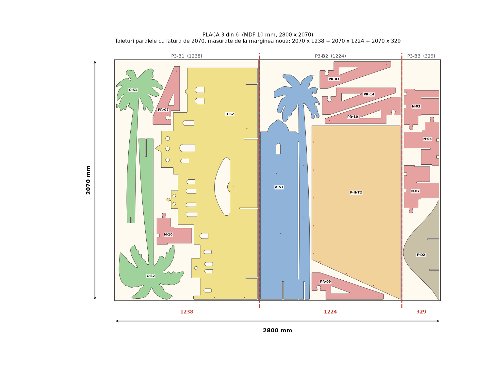
| Fâșie | Dimensiuni / cod | Denumire | Dim. piesă (mm) | DXF |
|---|---|---|---|---|
| P3-B1 P3-B1.dxf | 2070 × 1238 | 5 piese · vezi așezarea | ||
| C-S1 | Palmier mijloc stanga (capat) | 1325 × 404 | DXF | |
| C-S2 | Palmier mijloc stanga (nou) | 1380 × 558 | DXF | |
| D-S2 | Oras jos stanga 2 | 1989 × 876 | DXF | |
| N-16 | Nervura x=7250 | 300 × 270 | DXF | |
| PR-07 | Proptea pentru N-07 | 501 × 230 | DXF | |
| P3-B2 P3-B2.dxf | 2070 × 1224 | 6 piese · vezi așezarea | ||
| A-S1 | Fundal stanga: palmier + cladire spate | 1932 × 510 | DXF | |
| P-INT2 | Perete interior iesle - dreapta (demontabil) | 1491 × 760 | DXF | |
| PR-03 | Proptea pentru N-03 | 612 × 230 | DXF | |
| PR-09 | Proptea pentru N-09 | 617 × 230 | DXF | |
| PR-10 | Proptea pentru N-10 | 647 × 230 | DXF | |
| PR-14 | Proptea pentru N-14 | 631 × 230 | DXF | |
| P3-B3 P3-B3.dxf | 2070 × 329 | 4 piese · vezi așezarea | ||
| F-D2 | Dune dreapta 2 | 852 × 307 | DXF | |
| N-03 | Nervura x=707 | 350 × 300 | DXF | |
| N-04 | Nervura x=1180 | 420 × 300 | DXF | |
| N-07 | Nervura x=2750 | 410 × 300 | DXF | |
Toate tăieturile sunt paralele cu latura de 2070 mm. Măsori fâșiile una după alta, de fiecare dată de la marginea nouă: 1241 mm → P4-B1, 1057 mm → P4-B2, 480 mm → P4-B3. Rămâne o fâșie de deșeu de 10 mm.
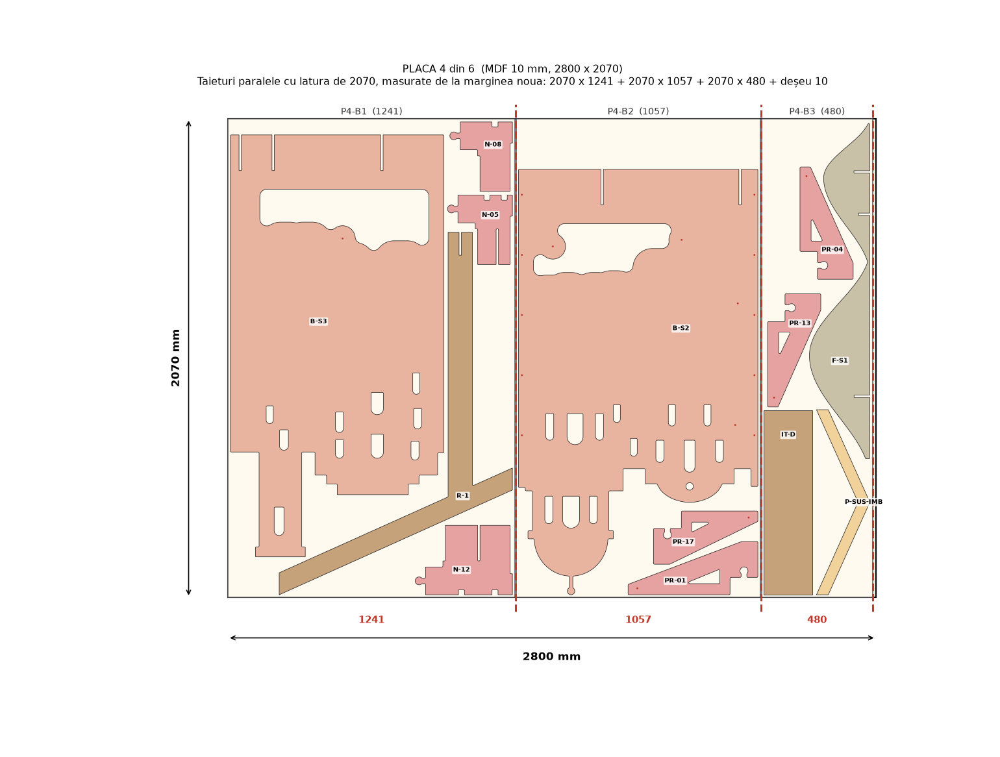
| Fâșie | Dimensiuni / cod | Denumire | Dim. piesă (mm) | DXF |
|---|---|---|---|---|
| P4-B1 P4-B1.dxf | 2070 × 1241 | 5 piese · vezi așezarea | ||
| B-S3 | Oras mare stanga 3 (clopotnita) | 1824 × 923 | DXF | |
| N-05 | Nervura x=1554 | 300 × 280 | DXF | |
| N-08 | Nervura x=3220 | 300 × 270 | DXF | |
| N-12 | Nervura x=5650 | 420 × 300 | DXF | |
| R-1 | Rama iesle - stanga | 1567 × 1008 | DXF | |
| P4-B2 P4-B2.dxf | 2070 × 1057 | 3 piese · vezi așezarea | ||
| B-S2 | Oras mare stanga 2 (cupola) | 1839 × 1035 | DXF | |
| PR-01 | Proptea pentru N-01 | 561 × 230 | DXF | |
| PR-17 | Proptea pentru N-17 | 451 × 230 | DXF | |
| P4-B3 P4-B3.dxf | 2070 × 480 | 5 piese · vezi așezarea | ||
| F-S1 | Dune stanga 1 | 1448 × 261 | DXF | |
| IT-D | Tavan iesle (dreapta) | 796 × 210 | DXF | |
| P-SUS-IMB | Placa imbinare perete sus | 800 × 231 | DXF | |
| PR-04 | Proptea pentru N-04 | 486 × 230 | DXF | |
| PR-13 | Proptea pentru N-13 | 489 × 230 | DXF | |
Toate tăieturile sunt paralele cu latura de 2070 mm. Măsori fâșiile una după alta, de fiecare dată de la marginea nouă: 1048 mm → P5-B1, 854 mm → P5-B2, 818 mm → P5-B3. Rămâne o fâșie de deșeu de 68 mm.
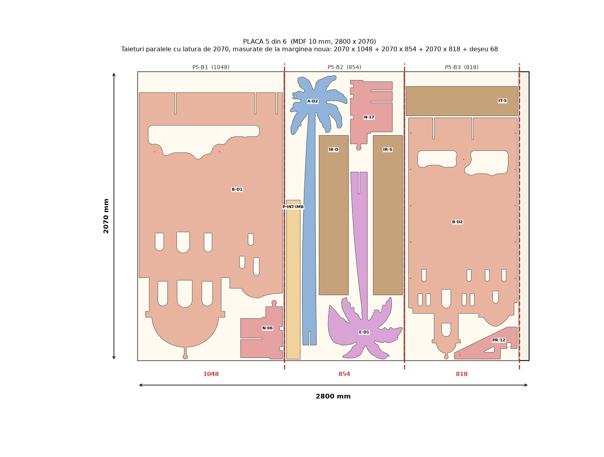
| Fâșie | Dimensiuni / cod | Denumire | Dim. piesă (mm) | DXF |
|---|---|---|---|---|
| P5-B1 P5-B1.dxf | 2070 × 1048 | 2 piese · vezi așezarea | ||
| B-D1 | Oras mare dreapta 1 (cupola mare) | 1908 × 1026 | DXF | |
| N-06 | Nervura x=2150 | 420 × 300 | DXF | |
| P5-B2 P5-B2.dxf | 2070 × 854 | 6 piese · vezi așezarea | ||
| A-D2 | Fundal dreapta: palmier spate | 1931 × 406 | DXF | |
| E-D1 | Palmier fata dreapta | 1339 × 532 | DXF | |
| IR-D | Perete lateral iesle (dreapta) | 1144 × 210 | DXF | |
| IR-S | Perete lateral iesle (stanga) | 1144 × 210 | DXF | |
| N-17 | Nervura x=7736 | 500 × 300 | DXF | |
| P-INT-IMB | Placa imbinare perete interior | 1139 × 100 | DXF | |
| P5-B3 P5-B3.dxf | 2070 × 818 | 3 piese · vezi așezarea | ||
| B-D2 | Oras mare dreapta 2 (turn) | 1728 × 778 | DXF | |
| IT-S | Tavan iesle (stanga) | 796 × 210 | DXF | |
| PR-12 | Proptea pentru N-12 | 450 × 230 | DXF | |
Toate tăieturile sunt paralele cu latura de 2070 mm. Măsori fâșiile una după alta, de fiecare dată de la marginea nouă: 1198 mm → P6-B1, 256 mm → P6-B2. Ce rămâne (1338 × 2070 mm) e un rest întreg: păstrează-l pentru piese de rezervă.
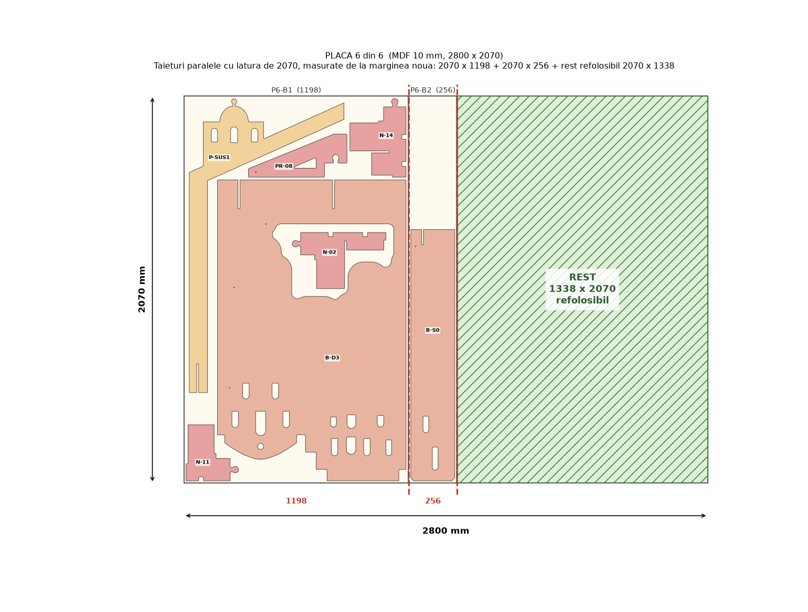
| Fâșie | Dimensiuni / cod | Denumire | Dim. piesă (mm) | DXF |
|---|---|---|---|---|
| P6-B1 P6-B1.dxf | 2070 × 1198 | 6 piese · vezi așezarea | ||
| B-D3 | Oras mare dreapta 3 | 1609 × 1008 | DXF | |
| N-02 | Nervura x=393 | 500 × 300 | DXF | |
| N-11 | Nervura x=5080 | 300 × 280 | DXF | |
| N-14 | Nervura x=6480 | 420 × 300 | DXF | |
| P-SUS1 | Perete iesle sus - stanga (permanent) | 1571 × 827 | DXF | |
| PR-08 | Proptea pentru N-08 | 527 × 230 | DXF | |
| P6-B2 P6-B2.dxf | 2070 × 256 | 1 piese · vezi așezarea | ||
| B-S0 | Oras mare stanga: cladirea de la capat | 1344 × 234 | DXF | |
| P6-REST | 2070 × 1338 | rest întreg, refolosibil – păstrează-l pentru piese de rezervă | ||
| Cod | Denumire | Dim. (mm) | Tip | Poziție | Fâșie A | Fâșie B | DXF |
|---|---|---|---|---|---|---|---|
| A-S1 | Fundal stanga: palmier + cladire spate | 1932 × 510 | panou decor | față, 370 mm în adâncime | P5-B2 | P3-B2 | DXF |
| B-S0 | Oras mare stanga: cladirea de la capat | 1344 × 234 | panou decor | față, 290 mm în adâncime | P2-B1 | P6-B2 | DXF |
| B-S1 | Oras mare stanga 1 (cupola mica) | 1632 × 843 | panou decor | față, 290 mm în adâncime | P1-B2 | P1-B2 | DXF |
| B-S2 | Oras mare stanga 2 (cupola) | 1839 × 1035 | panou decor | față, 300 mm în adâncime | P3-B1 | P4-B2 | DXF |
| B-S3 | Oras mare stanga 3 (clopotnita) | 1824 × 923 | panou decor | față, 290 mm în adâncime | P1-B1 | P4-B1 | DXF |
| C-S1 | Palmier mijloc stanga (capat) | 1325 × 404 | panou decor | față, 210 mm în adâncime | P1-B2 | P3-B1 | DXF |
| C-S2 | Palmier mijloc stanga (nou) | 1380 × 558 | panou decor | față, 210 mm în adâncime | P6-B1 | P3-B1 | DXF |
| D-S1 | Oras jos stanga 1 | 954 × 672 | panou decor | față, 140 mm în adâncime | P4-B2 | P2-B1 | DXF |
| D-S2 | Oras jos stanga 2 | 1989 × 876 | panou decor | față, 150 mm în adâncime | P4-B1 | P3-B1 | DXF |
| E-S1 | Palmier fata stanga | 1072 × 404 | panou decor | față, 70 mm în adâncime | P4-B1 | P2-B1 | DXF |
| F-S1 | Dune stanga 1 | 1448 × 261 | panou decor | față, 0 mm în adâncime | P1-B3 | P4-B3 | DXF |
| F-S2 | Dune stanga 2 | 1789 × 449 | panou decor | față, 10 mm în adâncime | P6-B1 | P2-B2 | DXF |
| B-D1 | Oras mare dreapta 1 (cupola mare) | 1908 × 1026 | panou decor | față, 290 mm în adâncime | P3-B2 | P5-B1 | DXF |
| B-D2 | Oras mare dreapta 2 (turn) | 1728 × 778 | panou decor | față, 300 mm în adâncime | P6-B2 | P5-B3 | DXF |
| B-D3 | Oras mare dreapta 3 | 1609 × 1008 | panou decor | față, 290 mm în adâncime | P2-B2 | P6-B1 | DXF |
| A-D1 | Fundal dreapta: cladire spate | 1536 × 369 | panou decor | față, 370 mm în adâncime | P2-B3 | P2-B3 | DXF |
| A-D2 | Fundal dreapta: palmier spate | 1931 × 406 | panou decor | față, 370 mm în adâncime | P6-B1 | P5-B2 | DXF |
| C-D1 | Palmier mijloc dreapta (nou) | 1369 × 436 | panou decor | față, 210 mm în adâncime | P6-B1 | P1-B1 | DXF |
| D-D1 | Oras jos dreapta 1 | 1658 × 829 | panou decor | față, 140 mm în adâncime | P4-B2 | P2-B2 | DXF |
| D-D2 | Oras jos dreapta 2 (turn cu cupola) | 1315 × 1210 | panou decor | față, 150 mm în adâncime | P5-B1 | P2-B1 | DXF |
| E-D1 | Palmier fata dreapta | 1339 × 532 | panou decor | față, 70 mm în adâncime | P4-B1 | P5-B2 | DXF |
| F-D0 | Dune dreapta 0 (capat) | 297 × 158 | panou decor | față, 10 mm în adâncime | P5-B1 | P2-B1 | DXF |
| F-D1 | Dune dreapta 1 | 937 × 430 | panou decor | față, 0 mm în adâncime | P4-B2 | P1-B1 | DXF |
| F-D2 | Dune dreapta 2 | 852 × 307 | panou decor | față, 10 mm în adâncime | P5-B2 | P3-B3 | DXF |
| F-D3 | Dune dreapta 3 | 1038 × 399 | panou decor | față, 0 mm în adâncime | P5-B1 | P2-B2 | DXF |
| P-SUS1 | Perete iesle sus - stanga (permanent) | 1571 × 827 | panou decor | față, 220 mm în adâncime | P2-B2 | P6-B1 | DXF |
| P-SUS2 | Perete iesle sus - dreapta (permanent) | 1647 × 827 | panou decor | față, 220 mm în adâncime | P1-B2 | P1-B1 | DXF |
| P-INT1 | Perete interior iesle - stanga (demontabil) | 1491 × 760 | panou decor | față, 230 mm în adâncime | P5-B2 | P1-B3 | DXF |
| P-INT2 | Perete interior iesle - dreapta (demontabil) | 1491 × 760 | panou decor | față, 230 mm în adâncime | P2-B1 | P3-B2 | DXF |
| R-1 | Rama iesle - stanga | 1567 × 1008 | panou decor | față, 0 mm în adâncime | P2-B1 | P4-B1 | DXF |
| R-2 | Rama iesle - dreapta | 1567 × 1008 | panou decor | față, 0 mm în adâncime | P1-B1 | P1-B1 | DXF |
| FIG-1 | Maria | 836 × 544 | panou decor | față, 150 mm în adâncime | P5-B1 | nu se taie | DXF |
| FIG-2 | Iosif | 1056 × 580 | panou decor | față, 150 mm în adâncime | P3-B3 | nu se taie | DXF |
| FIG-3 | Ieslea cu Pruncul | 442 × 375 | panou decor | față, 130 mm în adâncime | P3-B2 | nu se taie | DXF |
| STEA-1 | Steaua - baza (spate) | 487 × 468 | panou decor | față, -10 mm în adâncime | P5-B1 | P2-B3 | DXF |
| STEA-2 | Steaua - fata | 328 × 310 | panou decor | față, -20 mm în adâncime | P4-B3 | P1-B1 | DXF |
| P-SUS-IMB | Placa imbinare perete sus | 800 × 231 | plăcuță / placă | față, 230 mm în adâncime | P3-B3 | P4-B3 | DXF |
| P-INT-IMB | Placa imbinare perete interior | 1139 × 100 | plăcuță / placă | față, 240 mm în adâncime | P1-B2 | P5-B2 | DXF |
| R-IMB | Placa imbinare coama rama | 760 × 266 | plăcuță / placă | față, 10 mm în adâncime | P3-B3 | P1-B2 | DXF |
| IR-S | Perete lateral iesle (stanga) | 1144 × 210 | iesle | interiorul ieslei | P5-B3 | P5-B2 | DXF |
| IT-S | Tavan iesle (stanga) | 796 × 210 | iesle | interiorul ieslei | P6-B1 | P5-B3 | DXF |
| IR-D | Perete lateral iesle (dreapta) | 1144 × 210 | iesle | interiorul ieslei | P4-B3 | P5-B2 | DXF |
| IT-D | Tavan iesle (dreapta) | 796 × 210 | iesle | interiorul ieslei | P6-B1 | P4-B3 | DXF |
| N-01 | Nervura x=210 | 500 × 300 | nervură | nervura de la x = 210 mm | P5-B1 | P1-B1 | DXF |
| PR-01 | Proptea pentru N-01 | 561 × 230 | proptea | nervura de la x = 210 mm | P2-B1 | P4-B2 | DXF |
| N-02 | Nervura x=393 | 500 × 300 | nervură | nervura de la x = 393 mm | P2-B2 | P6-B1 | DXF |
| PR-02 | Proptea pentru N-02 | 562 × 230 | proptea | nervura de la x = 393 mm | P2-B1 | P1-B3 | DXF |
| N-03 | Nervura x=707 | 350 × 300 | nervură | nervura de la x = 707 mm | P5-B1 | P3-B3 | DXF |
| PR-03 | Proptea pentru N-03 | 612 × 230 | proptea | nervura de la x = 707 mm | P5-B2 | P3-B2 | DXF |
| N-04 | Nervura x=1180 | 420 × 300 | nervură | nervura de la x = 1180 mm | P1-B1 | P3-B3 | DXF |
| PR-04 | Proptea pentru N-04 | 486 × 230 | proptea | nervura de la x = 1180 mm | P2-B1 | P4-B3 | DXF |
| N-05 | Nervura x=1554 | 300 × 280 | nervură | nervura de la x = 1554 mm | P4-B1 | P4-B1 | DXF |
| PR-05 | Proptea pentru N-05 | 582 × 230 | proptea | nervura de la x = 1554 mm | P1-B1 | P1-B3 | DXF |
| N-06 | Nervura x=2150 | 420 × 300 | nervură | nervura de la x = 2150 mm | P2-B2 | P5-B1 | DXF |
| PR-06 | Proptea pentru N-06 | 475 × 230 | proptea | nervura de la x = 2150 mm | P2-B1 | P1-B2 | DXF |
| N-07 | Nervura x=2750 | 410 × 300 | nervură | nervura de la x = 2750 mm | P4-B1 | P3-B3 | DXF |
| PR-07 | Proptea pentru N-07 | 501 × 230 | proptea | nervura de la x = 2750 mm | P5-B1 | P3-B1 | DXF |
| N-08 | Nervura x=3220 | 300 × 270 | nervură | nervura de la x = 3220 mm | P5-B1 | P4-B1 | DXF |
| PR-08 | Proptea pentru N-08 | 527 × 230 | proptea | nervura de la x = 3220 mm | P2-B2 | P6-B1 | DXF |
| N-09 | Nervura x=3362 | 420 × 300 | nervură | nervura de la x = 3362 mm | P4-B2 | P2-B1 | DXF |
| PR-09 | Proptea pentru N-09 | 617 × 230 | proptea | nervura de la x = 3362 mm | P2-B1 | P3-B2 | DXF |
| N-10 | Nervura x=4928 | 420 × 300 | nervură | nervura de la x = 4928 mm | P1-B2 | P1-B1 | DXF |
| PR-10 | Proptea pentru N-10 | 647 × 230 | proptea | nervura de la x = 4928 mm | P5-B2 | P3-B2 | DXF |
| N-11 | Nervura x=5080 | 300 × 280 | nervură | nervura de la x = 5080 mm | P2-B3 | P6-B1 | DXF |
| PR-11 | Proptea pentru N-11 | 454 × 230 | proptea | nervura de la x = 5080 mm | P5-B3 | P2-B2 | DXF |
| N-12 | Nervura x=5650 | 420 × 300 | nervură | nervura de la x = 5650 mm | P3-B3 | P4-B1 | DXF |
| PR-12 | Proptea pentru N-12 | 450 × 230 | proptea | nervura de la x = 5650 mm | P1-B3 | P5-B3 | DXF |
| N-13 | Nervura x=6200 | 300 × 290 | nervură | nervura de la x = 6200 mm | P1-B3 | P2-B1 | DXF |
| PR-13 | Proptea pentru N-13 | 489 × 230 | proptea | nervura de la x = 6200 mm | P2-B1 | P4-B3 | DXF |
| N-14 | Nervura x=6480 | 420 × 300 | nervură | nervura de la x = 6480 mm | P6-B2 | P6-B1 | DXF |
| PR-14 | Proptea pentru N-14 | 631 × 230 | proptea | nervura de la x = 6480 mm | P4-B3 | P3-B2 | DXF |
| N-15 | Nervura x=6744 | 410 × 300 | nervură | nervura de la x = 6744 mm | P6-B2 | P1-B1 | DXF |
| PR-15 | Proptea pentru N-15 | 489 × 230 | proptea | nervura de la x = 6744 mm | P3-B3 | P2-B1 | DXF |
| N-16 | Nervura x=7250 | 300 × 270 | nervură | nervura de la x = 7250 mm | P3-B3 | P3-B1 | DXF |
| PR-16 | Proptea pentru N-16 | 570 × 230 | proptea | nervura de la x = 7250 mm | P3-B3 | P1-B3 | DXF |
| N-17 | Nervura x=7736 | 500 × 300 | nervură | nervura de la x = 7736 mm | P3-B1 | P5-B2 | DXF |
| PR-17 | Proptea pentru N-17 | 451 × 230 | proptea | nervura de la x = 7736 mm | P6-B2 | P4-B2 | DXF |
| N-18 | Nervura x=7930 | 500 × 120 | nervură | nervura de la x = 7930 mm | P1-B1 | P2-B1 | DXF |
| PR-18 | Proptea pentru N-18 | 582 × 230 | proptea | nervura de la x = 7930 mm | P4-B2 | P1-B3 | DXF |
| N-19 | Nervura x=8066 | 130 × 120 | nervură | nervura de la x = 8066 mm | P5-B1 | P2-B1 | DXF |
| PR-19 | Proptea pentru N-19 | 650 × 230 | proptea | nervura de la x = 8066 mm | P4-B1 | P2-B2 | DXF |
| PAD-01 | Placuta coltar pt PR-01 (pe A-S1) | 90 × 70 | plăcuță / placă | lipită pe spatele unui panou | P5-B1 | P2-B1 | DXF |
| PAD-02 | Placuta coltar pt PR-02 (pe A-S1) | 90 × 70 | plăcuță / placă | lipită pe spatele unui panou | P5-B1 | P2-B1 | DXF |
| PAD-03 | Placuta coltar pt PR-03 (pe B-S1) | 90 × 70 | plăcuță / placă | lipită pe spatele unui panou | P5-B1 | P2-B1 | DXF |
| PAD-04 | Placuta coltar pt PR-04 (pe B-S1) | 90 × 70 | plăcuță / placă | lipită pe spatele unui panou | P5-B1 | P2-B1 | DXF |
| PAD-05 | Placuta coltar pt PR-05 (pe B-S2) | 90 × 70 | plăcuță / placă | lipită pe spatele unui panou | P5-B1 | P2-B1 | DXF |
| PAD-06 | Placuta coltar pt PR-06 (pe B-S2) | 90 × 70 | plăcuță / placă | lipită pe spatele unui panou | P5-B1 | P2-B1 | DXF |
| PAD-07 | Placuta coltar pt PR-07 (pe B-S3) | 90 × 70 | plăcuță / placă | lipită pe spatele unui panou | P5-B1 | P2-B1 | DXF |
| PAD-08 | Placuta coltar pt PR-08 (pe B-S3) | 90 × 70 | plăcuță / placă | lipită pe spatele unui panou | P5-B1 | P2-B1 | DXF |
| PAD-09 | Placuta coltar pt PR-09 (pe B-S3) | 90 × 70 | plăcuță / placă | lipită pe spatele unui panou | P5-B1 | P2-B1 | DXF |
| PAD-10 | Placuta coltar pt PR-10 (pe B-D1) | 90 × 70 | plăcuță / placă | lipită pe spatele unui panou | P5-B1 | P2-B1 | DXF |
| PAD-11 | Placuta coltar pt PR-11 (pe B-D1) | 90 × 70 | plăcuță / placă | lipită pe spatele unui panou | P5-B1 | P2-B1 | DXF |
| PAD-12 | Placuta coltar pt PR-12 (pe B-D1) | 90 × 70 | plăcuță / placă | lipită pe spatele unui panou | P5-B1 | P2-B1 | DXF |
| PAD-13 | Placuta coltar pt PR-13 (pe B-D2) | 90 × 70 | plăcuță / placă | lipită pe spatele unui panou | P5-B1 | P2-B1 | DXF |
| PAD-14 | Placuta coltar pt PR-14 (pe B-D2) | 90 × 70 | plăcuță / placă | lipită pe spatele unui panou | P5-B1 | P2-B1 | DXF |
| PAD-15 | Placuta coltar pt PR-15 (pe B-D3) | 90 × 70 | plăcuță / placă | lipită pe spatele unui panou | P5-B1 | P2-B1 | DXF |
| PAD-16 | Placuta coltar pt PR-16 (pe B-D3) | 90 × 70 | plăcuță / placă | lipită pe spatele unui panou | P5-B1 | P2-B1 | DXF |
| PAD-17 | Placuta coltar pt PR-17 (pe A-D1) | 90 × 70 | plăcuță / placă | lipită pe spatele unui panou | P5-B1 | P2-B1 | DXF |
| PAD-18 | Placuta coltar pt PR-18 (pe A-D1) | 90 × 70 | plăcuță / placă | lipită pe spatele unui panou | P5-B1 | P2-B1 | DXF |
| PAD-19 | Placuta coltar pt PR-19 (pe A-D2) | 90 × 70 | plăcuță / placă | lipită pe spatele unui panou | P5-B1 | P2-B1 | DXF |
Instrucțiunile complete, cu tabele și planșe, sunt în PDF-ul variantei tale (A · B). Pe scurt:
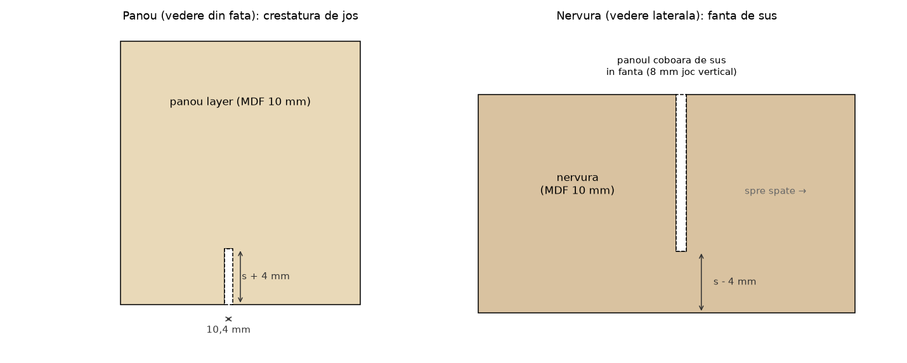
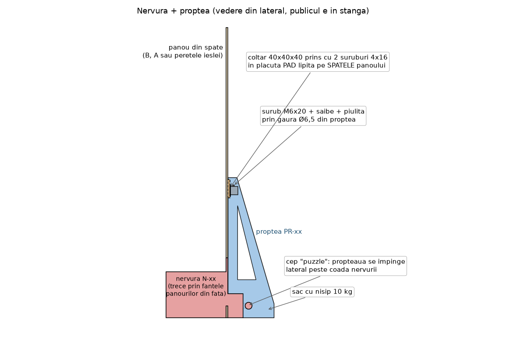
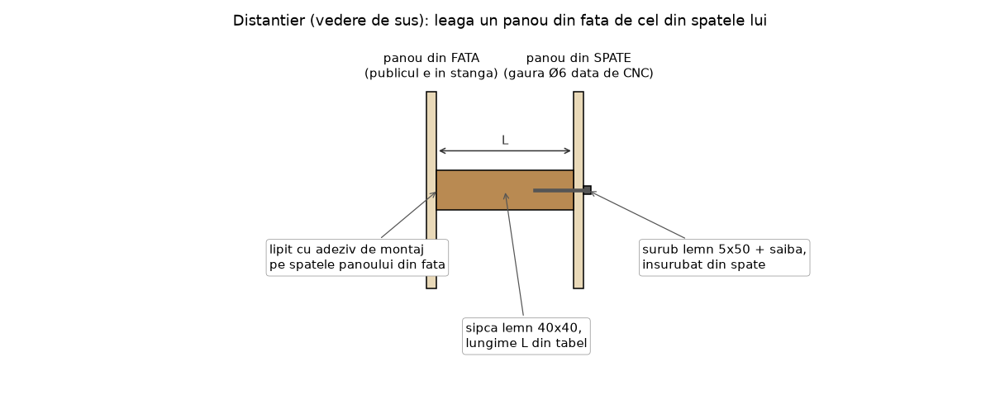
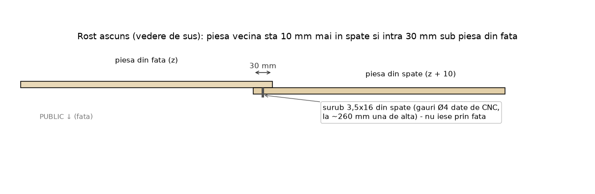
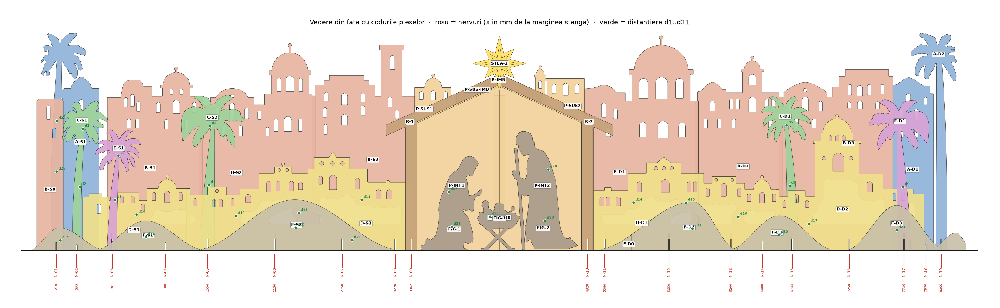
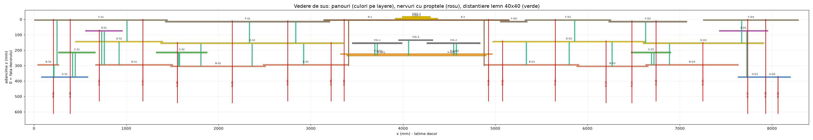
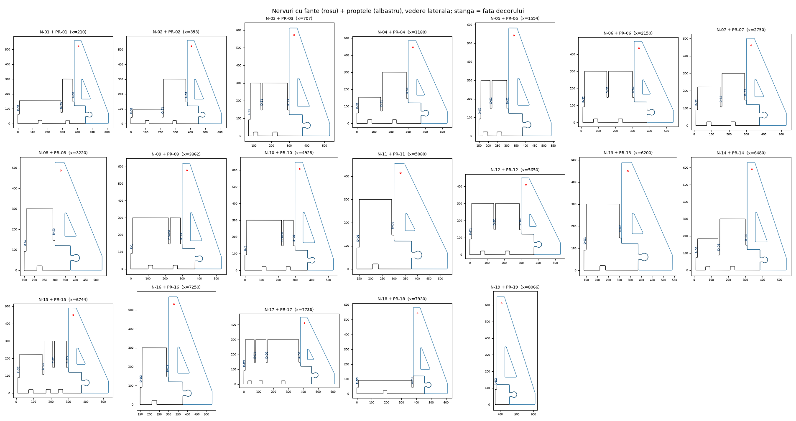
| Nervura | x (mm) | Trece prin | Proptea |
|---|---|---|---|
| N-01 | 210 | F-S1, B-S0, A-S1 | PR-01 · 561 mm |
| N-02 | 393 | F-S1, C-S1, A-S1 | PR-02 · 562 mm |
| N-03 | 707 | E-S1, D-S1, B-S1 | PR-03 · 612 mm |
| N-04 | 1180 | F-S1, D-S1, B-S1 | PR-04 · 486 mm |
| N-05 | 1554 | D-S2, C-S2, B-S2 | PR-05 · 582 mm |
| N-06 | 2150 | F-S2, D-S2, B-S2 | PR-06 · 475 mm |
| N-07 | 2750 | F-S2, D-S2, B-S3 | PR-07 · 501 mm |
| N-08 | 3220 | D-S2, B-S3 | PR-08 · 527 mm |
| N-09 | 3362 | R-1, P-SUS1, B-S3 | PR-09 · 617 mm |
| N-10 | 4928 | R-2, P-SUS2, B-D1 | PR-10 · 647 mm |
| N-11 | 5080 | D-D1, B-D1 | PR-11 · 454 mm |
| N-12 | 5650 | F-D1, D-D1, B-D1 | PR-12 · 450 mm |
| N-13 | 6200 | D-D1, B-D2 | PR-13 · 489 mm |
| N-14 | 6480 | F-D2, D-D1, B-D2 | PR-14 · 631 mm |
| N-15 | 6744 | F-D2, D-D2, C-D1, B-D3 | PR-15 · 489 mm |
| N-16 | 7250 | D-D2, B-D3 | PR-16 · 570 mm |
| N-17 | 7736 | F-D3, E-D1, D-D2, A-D1 | PR-17 · 451 mm |
| N-18 | 7930 | F-D3, A-D1 | PR-18 · 582 mm |
| N-19 | 8066 | A-D2 | PR-19 · 650 mm |
| Nr. | Față → spate | x | y | L (mm) |
|---|---|---|---|---|
| d1 | C-S1 → A-S1 | 446 | 1081 | 150 |
| d2 | C-S1 → A-S1 | 416 | 564 | 150 |
| d3 | C-S2 → B-S2 | 1575 | 1105 | 80 |
| d4 | C-S2 → B-S2 | 1564 | 580 | 80 |
| d5 | C-D1 → B-D3 | 6693 | 1111 | 70 |
| d6 | C-D1 → B-D3 | 6718 | 575 | 70 |
| d7 | E-S1 → B-S1 | 762 | 842 | 210 |
| d8 | E-S1 → B-S1 | 732 | 450 | 210 |
| d9 | E-D1 → A-D1 | 7726 | 562 | 290 |
| d10 | D-S1 → B-S1 | 922 | 317 | 140 |
| d11 | D-S2 → B-S2 | 1807 | 305 | 140 |
| d12 | D-S2 → B-S2 | 2363 | 333 | 140 |
| d13 | D-S2 → B-S3 | 2920 | 448 | 130 |
| d14 | D-D1 → B-D1 | 5335 | 424 | 140 |
| d15 | D-D1 → B-D1 | 5800 | 424 | 140 |
| d16 | D-D1 → B-D2 | 6264 | 298 | 150 |
| d17 | D-D2 → B-D3 | 6888 | 236 | 130 |
| d18 | F-S1 → D-S1 | 1007 | 117 | 130 |
| d19 | F-S1 → B-S0 | 247 | 89 | 280 |
| d20 | F-S2 → D-S2 | 2335 | 202 | 130 |
| d21 | F-S2 → D-S2 | 2836 | 90 | 130 |
| d22 | F-D1 → D-D1 | 5858 | 193 | 130 |
| d23 | F-D2 → D-D2 | 6627 | 138 | 130 |
| d24 | F-D3 → D-D2 | 7670 | 179 | 140 |
| d25 | B-S0 → A-S1 | 213 | 700 | 70 |
| d26 | B-S0 → A-S1 | 213 | 1150 | 70 |
| d27 | FIG-1 → P-INT1 (doar A) | 3693 | 518 | 70 |
| d28 | FIG-1 → P-INT1 (doar A) | 3721 | 209 | 70 |
| d29 | FIG-2 → P-INT2 (doar A) | 4577 | 718 | 70 |
| d30 | FIG-2 → P-INT2 (doar A) | 4548 | 264 | 70 |
| d31 | FIG-3 → P-INT1 (doar A) | 4060 | 300 | 90 |
| Ce | Cantitate | Unde |
|---|---|---|
| Colțar zincat 40×40×40 | 19 buc | proptea → panoul din spate |
| Șurub M6×20 + 2 șaibe + piuliță | 19 buc | colțar → proptea |
| Șurub 4×16 | 38 buc | colțar → plăcuța PAD |
| Șipcă lemn 40×40 | 4.6 m (31 buc în A, 26 în B) | distanțiere |
| Șurub lemn 5×50 + șaibă | 31 buc (A) / 26 buc (B) | distanțiere, din spate |
| Șurub 3,5×16 | 76 buc | rosturi ascunse, peretele interior P-INT, plăci de îmbinare |
| Șurub 3,5×25 / 3,5×30 | 4 / ≈40 buc | steaua / ieslea |
| Șipcă 20×20 | ≈ 8,5 m | colțurile ieslei |
| Aracet D3 + adeziv de montaj | 1 kg + 2 tuburi | lipire |
| Grund MDF + vopsea acrilică mată crem | ≈ 3 L + 5 L | finisare |
| Saci cu nisip 10 kg | 19 buc | pe tălpile proptelelor |
| Bandă LED COB 24 V, 2700–3000 K | 25 m | iluminare |
| Sursă 24 V 300 W + variator + cablu | 1 set | iluminare |